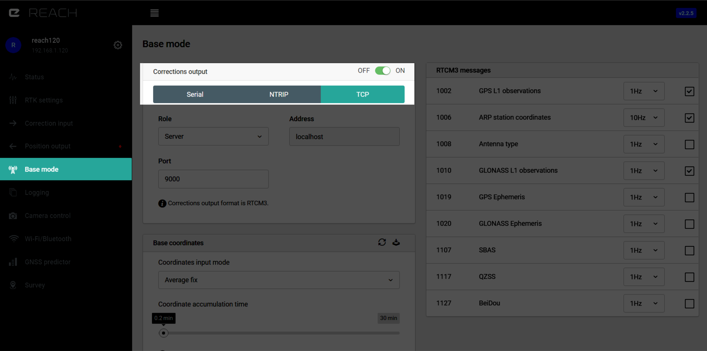
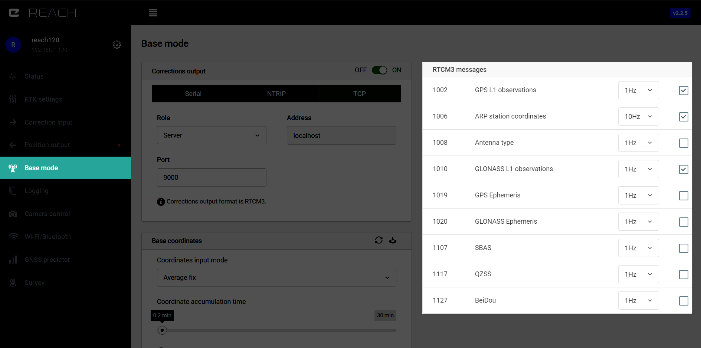
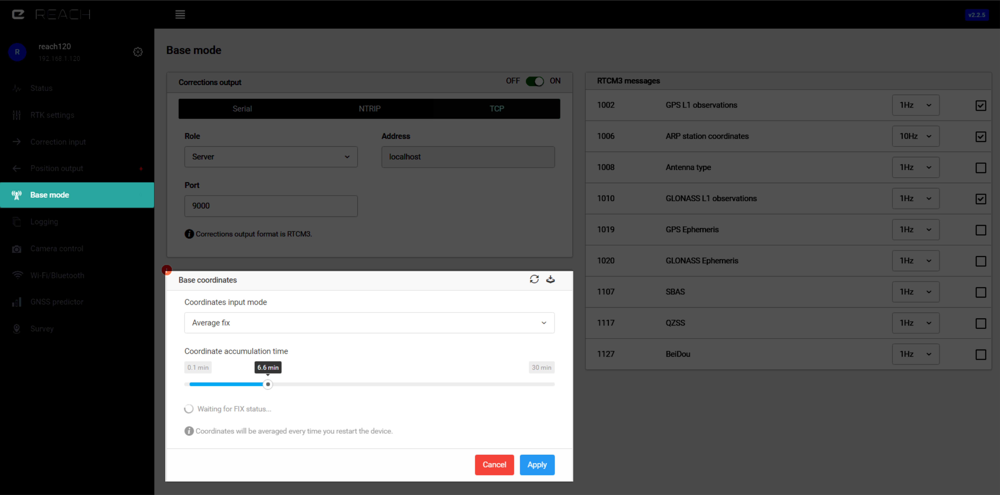

Mode Station Fixe
Sortie du flux de correction (Correction output)¶

Le module reach exporte le flux de correction selon le format standard RTCM3. Les données de correction peuvent être transmises par liaison série (Serial), TCP, NTRIP ou LoRa pour Reach RS.
Liaison Série (Serial)¶
La connexion au port série est disponible avec différentes options de connexion matérielle. Toutes supportent les vitesses de transmission suivantes: 4800, 9600, 14400, 19200, 28800, 38400, 56000, 57600, 115200, 128000, 153600, 230400, 256000, 460800, 921600
UART¶
Correspond à l'UART TTL du module Reach ou le port RS232 du connecteur d'extension disponible sur le Reach RS. C'est un cas usuel que d'y connecter la radio pour transmettre les données de correction.
USB-to-PC¶
Quand le module Reach est connecté à un ordinateur via USB il sera visible en tant que différents appareils, l'un d'entre eux est via un port série. Vous pouvez utiliser ce port série pour envoyer les données de correction à l'ordinateur.
USB OTG¶
Utiliser un cable micro-USB OTG pour connecter des accessoires USB. Dans ce mode là seulement les appareils USB qui émulent un port série peuvent être utilisés. Exemples de puces répandues qui sont supportées : FT232, CP2102. Il y a de nombreux appareils basés sur ces puces qui peuvent vous fournir un UART TTL ou un port RS232.
NTRIP¶
NTRIP est la norme du secteur pour transférer les corrections GNSS via Internet, avec ReachView vous pouvez utiliser tout service publique ou votre propre fournisseur privé. NTRIP ne permet pas une communication point à point, par exemple vous ne pouvez pas l'utiliser pour transmettre les corrections d'un module Reach à un autre directement. Dans la terminolgie NTRIP il y a des serveurs, des clients et des diffuseurs. Le serveur envoie les corrections au diffuseur et les clients peuvent les recevoir en se connectant à ce diffuseur.
Pour envoyer des correction à un diffuseur NTRIP vous avez besoin de:
- l'adresse IP ou nom de domaine du diffuseur
- port
- nom d'utilisateur
- mot de passe
- point de montage
Quand un module Reach est connecté via NTRIP en mode station fixe (base), il agit en tant que serveur NTRIP.
TCP¶
Le scénario typique pour utiliser TCP est d'envoyer les données de correction vers une application sur le même réseau ou sur un serveur avec une adresse IP publique.
Le protocol TCP fonctionne avec deux modes:
Serveur¶
Vous devez renseigner le port et ensuite les clients seront en mesure de se connecter à cet appareil sur son adresse IP. Plusieurs clients peuvent se connecter au même serveur.
Client¶
Vous devez renseigner l'adresse IP et le numéro du port du serveur.
Si ReachView ne permet pas de renseigner un port spécifique, cela signifie qu'il est utilisé pour un usage interne.
Radio LoRa (seulement Reach RS)¶
Le Reach RS possède un radio LoRa interne qui est utilisée pour recevoir et envoyer les corrections. La radio fonctionne dans un seul sens, elle peut être configurée soit pour envoyer des corrections (depuis la station fixe ou base) ou pour les recevoir (récepteur mobile ou rover). En utilisant la modulation LoRa il est possible d'atteindre une portée de 19km en ligne de visée directe ou de quelques kilomètres en zone urbaine avec seulement 20 dBm de puissance de sortie. Tant que les paramètres de fréquence et de vitesse de transmission correspondent il est possible de connecter un nombre infini de récepteur mobile qui peuvent alors recevoir les corrections depuis une même station fixe (base).
Plus la vitesse de transmission est faible, plus la portée effective sera grande. Selon votre selection de messages RTCM3 ReachView restreindra automatiquement les vitesses de transmission trop faibles. Il faut désactiver des messages de correction ou réduire leur fréquence d'envoi afin de débloquer des vitesses de transmission plus faibles.
Les vitesses de transmission sur les Reach RS émetteurs (base) et récepteurs (rover) doivent correspondre.
Veuillez vérifier que vous sélectionner des puissances d'émission et de fréquence en accord avec la règlementation de votre région.
Messages RTCM3¶

| Messages RTCM3 | Messages minimaux requis | @ |
|---|---|---|
| 1002 | GPS L1 observations | 1 Hz |
| 1006 | ARP station coordinate | 0.1 Hz |
| Messages RTCM3 | Messages optionnels pour autres systèmes GNSS |
|---|---|
| 1010 | GLONASS L1 observation |
| 1097 | GALILEO MSM |
| 1107 | SBAS MSM |
| 1117 | QZSS MSM |
| 1127 | BeiDou MSM |
| RTCM3 messages | Messages spécifiques pour applications atypiques |
|---|---|
| 1008 | Antenna type |
| 1019 | GPS Ephemeris |
| 1020 | GLONASS Ephemeris |
Le sous-ensemble minimal nécessaire au fonctionnement en RTK est 1002 pour les observations GPS et 1006 pour les coordonnées de la station fixe (base). Activer plus de messages ou une fréquence d'envoi plus importante requiert une bande passante plus importante pour votre connexion.
Voici une estimation en bps (bit par secondes) quand les messages sont configurés à 1 Hz: Here is an estimation of bps when messages are configured at 1 Hz:
| Messages RTCM3 | Vitesse de transmission, bps |
|---|---|
| 1002 | 156 |
| 1006 | 21 |
| 1008 | 68 |
| 1010 | 126.125 |
| 1019 | 976 |
| 1020 | 540 |
| 1097 | 754 |
| 1107 | 520 |
| 1117 | 520 |
| 1127 | 1573 |
Tip
N'oubliez pas, vous ne pouvez pas utiliser les message BeiDou 1127 et GLONASS 1010.
Voici quelques information à propos de chacun des messages issus du standard RTCM 10403.3 (Radio Technical Commission for Maritime Services, 2016):
- Message Type 1002 supporte le fonctionnement RTK mono-fréquence et inclut une indication du rapport porteuse-sur-bruit (carrier-to-noise ratio ou CNR en anglais) pour le satellite GPS, comme mesuré par la station de référence.
- Message Type 1006 fournit les coordonnées ECEF (earth-centered, earth-fixed) de l'antenne du point de référence (antenna reference point ou ARP en anglais) pour une station de référence et la hauteur de l'ARP au dessus du point de relevé.
- Message Type 1008 fourni une description ASCII de l'antenne de la station de référence ainsi que le numéro de série de l'antenne, ce qui permet de lever toute ambiguïté sur le numéro de modèle ou lot de production.
- Message Type 1010 supporte le fonctionnement RTK mono-fréquence et inclut une indication du rapport porteuse-sur-bruit (carrier-to-noise ratio ou CNR en anglais) pour le satellite GLONASS, comme mesuré par la station de référence.
- Message Type 1019 contient les informations sur les éphémérides du satellite GPS. This message could be broadcast in the event that the IODC (Issue of Data, Clock) does not match the IODE (Issue of Data, Ephemeris), which would require the differential reference station to base corrections on the previous good satellite ephemeris. This would allow the user equipment just entering the differential system to utilize the corrections being broadcast for that ephemeris, and would support the use of the satellite for differential navigation despite the fact that the satellite ephemeris was in error. It is anticipated that this message type would be broadcast every 2 minutes or so while this condition persisted. Another use of the message is to assist user receivers to quickly acquire satellites. For example, if the user receiver has access to a wireless service with this message, rather than waiting until one satellite has been acquired and its almanac data processed, it can utilize the ephemeris information immediately.
- Message Type 1020 contient les informations sur les éphémérides du satellite GLONASS et possède les mêmes caractéristiques que le message 1019.
-
Messages 1097 (GALILEO), 1107 (SBAS), 1117 (QZSS), 1127 (BeiDou) sont des messages MSM7 (Multiple Signal Messages). MSM7 sont des messages de haute précision ce qui siginifie qu'ils contiennent l'ensemble complet des observations RINEX avec résolution étendue: Full GNSS Pseudoranges, Phase Ranges, Phase Range Rate and CNR (high resolution). Key features of the messages are as follows: Effective identification of satellites and their signals by introducing satellite and signal masks, Effective bit consumption for ‘transition GNSS periods’ by introducing cell masks, Effective decomposition of observables by introducing the rough/fine range concept, Effective scalability of different observables by introducing observation blocks, Expressing complete set of RINEX observations for all bands and all signals in the same units (milliseconds).
Note
One of the most important data fields (DF) in MSM messages is the signal mask. It is a bitset indicating which signals from a given GNSS are available from at least one of the multitude of tracked satellites. Each bit in the signal mask is representative of a specific GNSS signal. The definition of the signal mask bits is different for each GNSS, and is provided for each GNSS separately.
Radio Technical Commission for Maritime Services. 2016. RTCM STANDARD 10403.3 DIFFERENTIAL GNSS (GLOBAL NAVIGATION SATELLITE SYSTEMS) SERVICES – VERSION 3. Virginia: Radio Technical Commission for Maritime Services, pp. 108-262
Coordonnées de la station fixe (Base position)¶

Il existe deux principaux paramètres pour spécifier les coordonnées de la station fixe (base). Notez que le positionnement RTK est relatif à la position de la base, donc tout approximation dans sa position résultera en un décalage constant des coordonnées du récepteur mobile (rover). Pour beaucoup de cas d'utilisation ce n'est pas critique et moyenner des coordonnées issus d'une solution SINGLE peut suffir. Si votre cas d'utilisation nécessite des coordonnées en précision absolu pour le récepteur mobile alors les coordonnées précises de la station fixe (base) doivent être renseignées.
Manuel (Manual)¶
Dans ce mode vous renseignez une coordonnée connue a priori en positionnant le module au dessus du point de levé. Les coordonnées doivent être entrées au format XYZ ECED ou au format Latitude et Longitude WGS84 et altitude ellipsoïdales WGS84. Le décalage de hauteur d'antenne est également renseigné lors de cette étape, le décalage étant limité à 6.5535m par le format des messages RTCM.
Moyennage (Average)¶
Par défaut le module Reach effectuera un moyennage de la position de la station fixe (base) lors de chaque redémarrage. Cette fonctionnalité améliore significativement la configuration initiale sur un nouveau site, cependant elle ne fournit pas des coordonnées absolues correctes.
ReachView possède une fonctionnalité unique qui lui permet de déterminer les coordonnées de la station fixe (base) alors qu'il fonctionne en tant que récepteur mobile (rover) en tandem avec une autre station fixe. Ceci est effectué en obtenant un position RTK "Fix", en la moyennant sur une certaine durée et en obtenant alors des coordonnées correctes pour la station fixe (base). Un exemple de scénario courant implique de configurer une station fixe locale en déterminant ses coordonnées via NTRIP et en diffusant ensuite les données de correction localement, ce qui permet ainsi de réduire la distance au référentiel (baseline) pour les récepteurs mobiles et donc améliorer la qualité du positionnement.
Si la station de référence est trop éloignée il est possible de moyenner une solution FLOAT et de tout de même améliorer l'exactitude des coordonnées.
Dans le cas où aucune correction n'est disponible lors de la configuration de la station fixe (base) ou si des coordonnées absolues ne sont pas nécessaires alors moyenner les coordonnées issues d'une solution SINGLE peut être suffisant.
Enregistrer des coordonnées moyennées pour le mode manuel
Une fois que vous avez réussi à obtenir des coordonnées moyennées vous pouvez les enregistrer pour un usage ultérieur. Appuyez sur l'icône d'enregistrement des coordonnées "save coordinates" et la position sera enregistrée comme si elle avait été entrée en mode manuel. Ainsi lors de chaque redémarrage le module Reach diffusera cette position dans les messages de correction.
Recommencer le moyennage
Si vous souhaitez recommencer le moyennage des coordonnées de la station fixe vous pouvez cliquer sur l'icône "repeat averaging". C'est particulièrement utile lors d'une situation où vous avez accidentellement déplacé le module Reach pendant le moyennage.